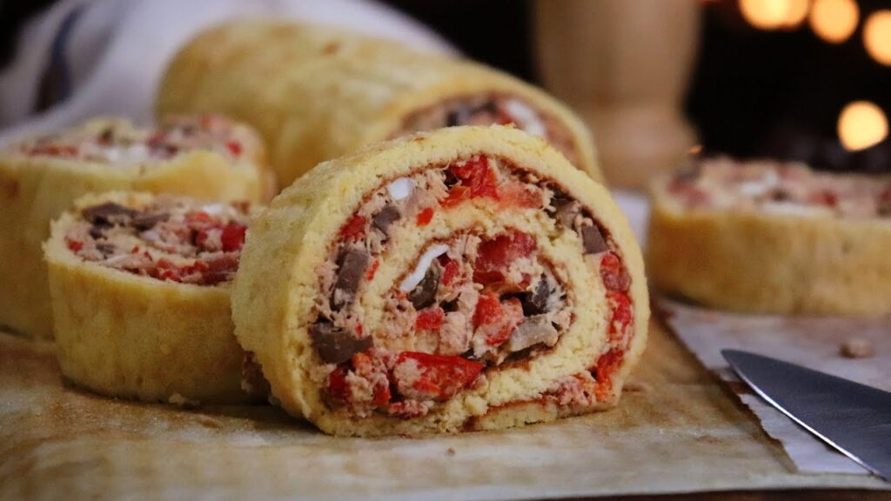
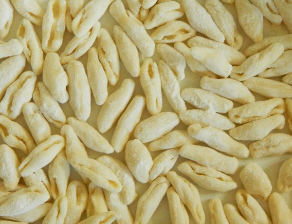

Lo mas reciente en Evaristo Cocina

Bondiola a la Cerveza

Pollo al Escabeche

Pionono Salado
con un amplio recetario no solo de comidas tipicas Latinoamericanas,
si no tambien a las bebidas tipicas de la región. Esa receta que buscabas
por todos lados, aquí la encontrarás.
Ñoquis caseros
Una receta simple, rápida y rica para salir del apuro!
RECETAS RECOMENDABLES

Ñoquis caseros
Receta de Ñoquis caseros, una receta simple, rápida y rica para salir del apuro e impresionar a cualquiera!
Leer Mas

Cavatelli
Cavatelli, pasta casera con sólo 2 ingredientes, simple e ideal para todos los días!
Leer Mas
Ravioles caseros
Las pastas rellenas son siempre las favoritas, por eso hoy te mostramos como hacer Ravioles Caseros!
Leer Mas